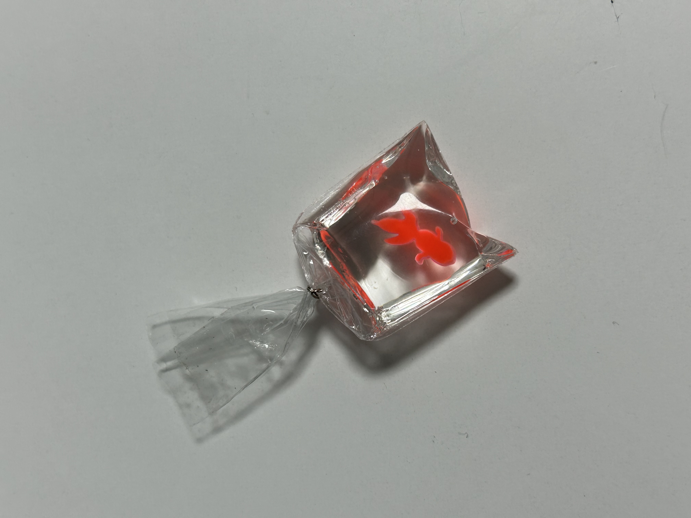
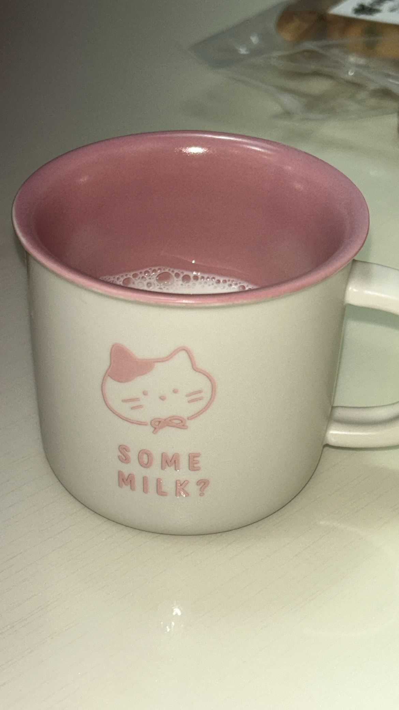
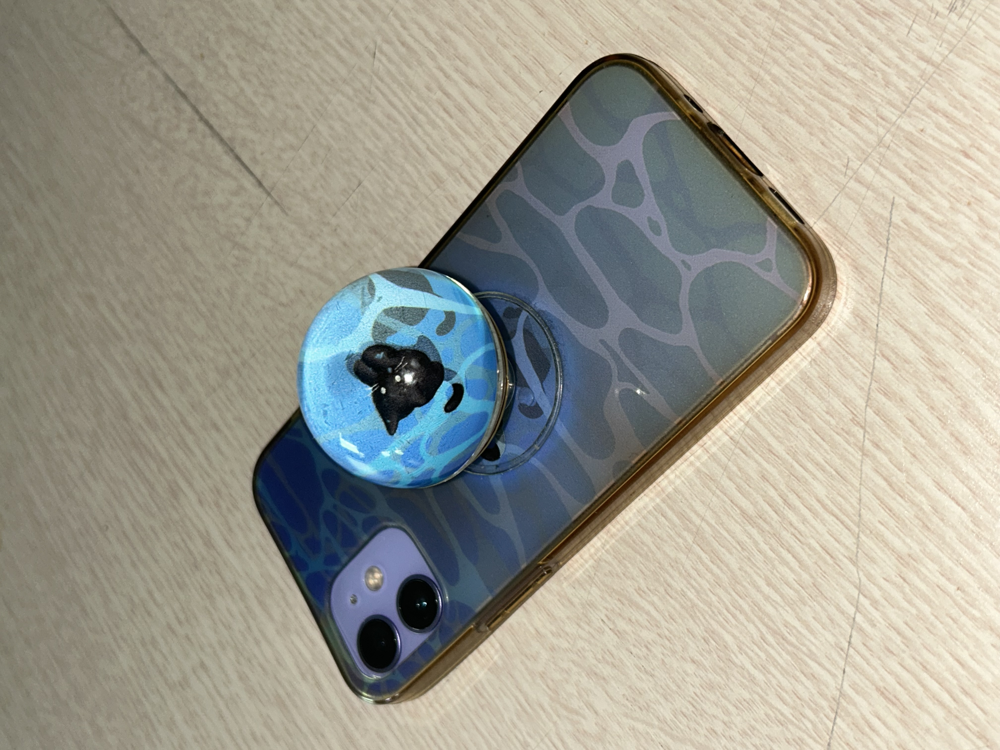
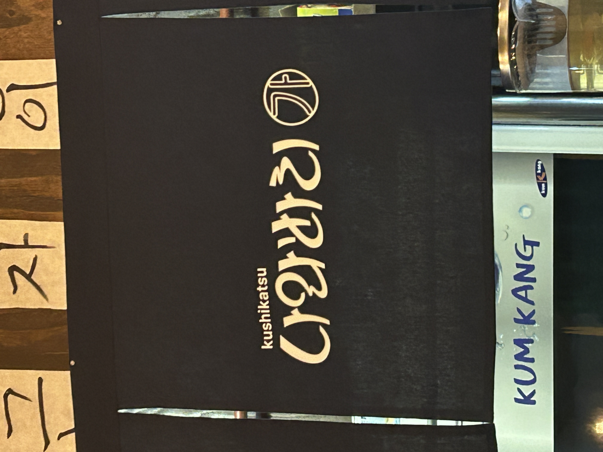
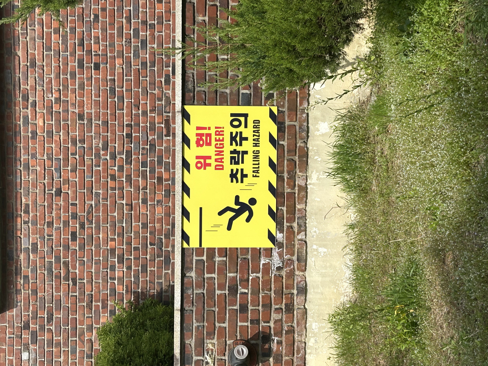
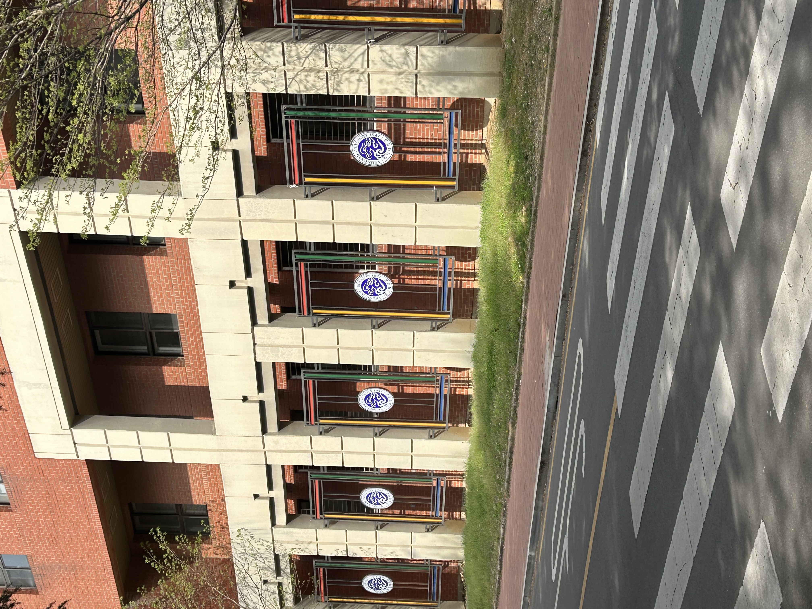
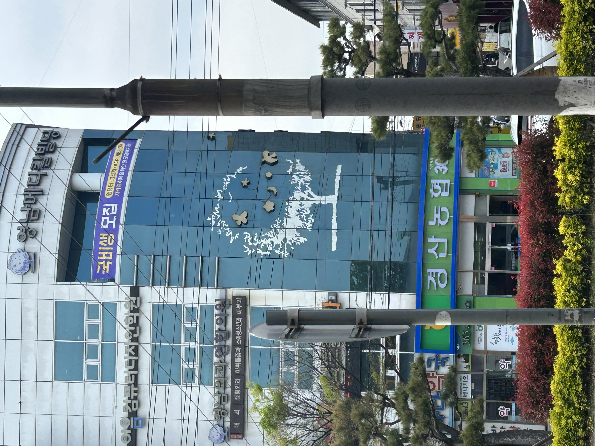
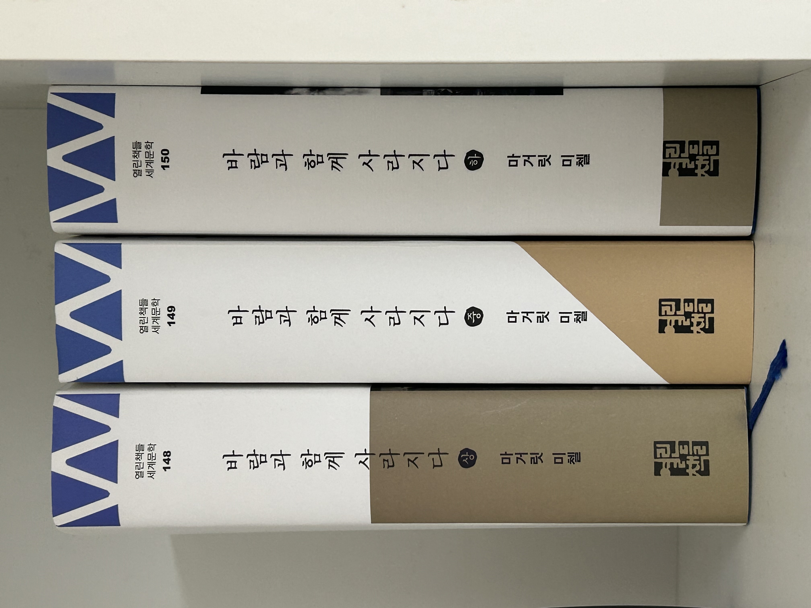
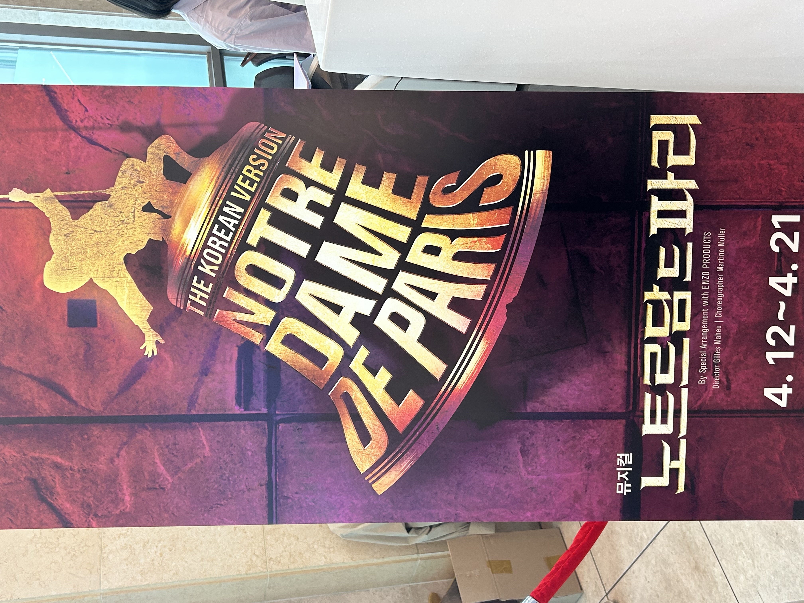

물고기 키링
주황색 금붕어 키 링이다. 비닐로 금붕어가 들어있는 봉지를 표현하고 레진을 사용해 봉지 속에 물이 든 것처럼 만든 것이 신기하고 예쁘다. 평소에 레진 아트에 대해 관심이 있어 레진 아트 영상을 찾아본 적이 있고 예쁘다고 생각해와서 더 관심이 생겼다. 또 비슷한 제품이 있으면 찾아보고 싶다.
머그컵
집에 있는 귀여운 고양이 그림이 그려진 머그컵이다. 흰색 바탕에 분홍색으로 디자인된 컵이 우유와 정말 잘 어울린다고 생각해 컵에 우유를 마셨다. 하지만 고양이 그림 밑에 적힌 some milk?라는 문구 때문에 이 컵에는 우유만 담아 마셔야 할 것 같은 느낌을 받았다.
악어

미대 뒤쪽 작품들이 전시되어 있는 구역의 작품이다. 악어를 만든 작품 같은데 악어 전체가 보이는 게 아니라 각각 악어의 머리, 몸통, 꼬리 중 일부만 보이게 디자인했다. 마치 물속에서 윗부분만 바깥으로 내밀고 있는 악어의 모습을 연상시켜 좋은 아이디어라는 생각이 들었다.
핸드폰 케이스
친구의 핸드폰 케이스이다. 케이스에는 바다의 푸른 물결이 표현되어 있다. 케이스에 붙어있는 그립톡에는 고양이가 헤엄치는 듯한 그림이 있다. 그립톡의 볼록하고 동그란 모양 때문에 고양이가 물속에 있는 듯한 느낌을 준다. 그립톡의 볼록함을 이용해 바다를 디자인한 케이스가 예쁘다.
가게
학교 앞 가게인 나와바리라는 곳의 간판이다. 나와바리는 일본어로 구역이라는 뜻인데 일본어가 한글로 쓰여있다. 하지만 둥글고 일본어처럼 보이는 폰트를 사용해 한글인데도 일본어로 착각하는 사람도 있다. 일본어 단어를 폰트를 이용해 일본어처럼 보이게 디자인한 것이 좋은 아이디어라고 생각했다.
표지판
학교에 붙어있는 추락 주의 경고 표지판이다. 저런 곳에 올라가는 사람이 있을 거라고는 생각하지 못해 표지판이 있는 것이 의아했다. 사진을 찍고 다시 보니 추락 주의 표지판은 위험이라고 적힌 글씨 옆에 사람이 떨어지고 있는 그림을 함께 넣어 공포감을 줘 그 효과를 증진시킨다고 생각했다.
로고
학교 건물 벽면에 영남대학교 로고가 있다. 동그란 로고 사방으로 알록달록한 막대가 둘러져 있다. 예전에 살던 아파트에서 비슷한 방식으로 벽면을 알록달록하게 꾸몄던 기억이 난다. 여러 가지 색깔로 디자인이 되어있는 곳이 그렇지 않은 곳보다 범죄율이 낮다는 사례를 보고 따라 한 것이다. 그것이 생각나 학교 건물 벽도 유심히 살피게 되었다.
건물
학교 근처 메디컬 빌딩이라는 건물 창문의 그림이다. 디자인한 사람의 의도를 완전하게 파악할 수는 없지만 나무의 빛 부분을 초승달처럼 표현한 것과 나무는 평면적이지만 그 위의 작은 장식들은 두께가 있어 귀엽고 독특하다. 또, 나무라는 빌딩 안에 여러 가지가 들어는 것을 표현한다는 느낌도 받았다.
책
집에 소장하고 있는 바람과 함께 사라지다라는 소설책이다. 상중하가 나누어져 있는 책이다. 책 겉면 옆부분을 자세히 보니 상중하 순서대로 색칠된 면적이 점점 줄어든다. 아무렇게나 칠한 것이 아니라 상중하에 맞춰 책의 진행 상황을 표현한 디자인 같아 멋진 아이디어라고 생각했다.
뮤지컬
뮤지컬 포스터에 종에 사람이 올라타있는 그림이 그려져 있다. 종 중간 부분에는 글씨만 쓰여있다. 글자의 모양을 바꾸고 명암을 줘 형체가 있는 것처럼 만들어 종 모양처럼 보이게 한 것이다. 그림이 없는데도 그림처럼 보이게 할 수 있다는 점에서 좋은 디자인이라고 생각했다.
돌아가기